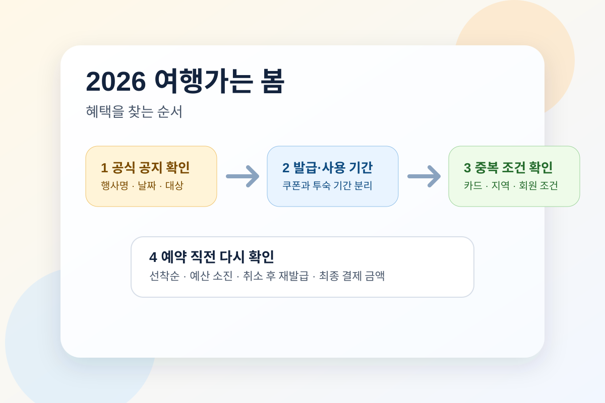

여행가는 봄은 봄마다 다시 검색되는 대표 키워드지만, 해마다 나오는 혜택은 그대로 반복되지 않습니다. 그래서 이 글은 "무슨 쿠폰이 뜨나"를 단정하기보다 공식 정책·캠페인 페이지에서 무엇부터 확인해야 하는지를 먼저 정리합니다.
이 정리는 2025년 공식 공개 사례를 기준으로 2026년 봄에도 같은 순서로 확인하라는 뜻입니다. 세부 쿠폰, 사용 기간, 선착순 여부는 올해 다시 바뀔 수 있으니 출발 직전에 공식 페이지를 재확인해야 합니다.

가장 먼저 볼 공식 페이지
2025년 2월 27일 출범 기사에서 이미 3월 여행가는 달, 4월 걷기여행주간, 5월 해양관광 캠페인 구조가 공개됐습니다. 그래서 올해도 한 장짜리 쿠폰표보다 시기별 공지를 순서대로 찾는 방식이 더 안전합니다.
공식 캠페인 페이지는 시즌마다 구성이 바뀌지만, 위 정책 페이지들만 봐도 발급일과 사용일이 다르거나, 예산 소진 시 조기 종료될 수 있다는 공통점이 보입니다.
혜택을 찾는 순서
- 공식 공지에서 행사명, 날짜, 대상을 먼저 확인합니다. 선착순인지, 자동 할인인지, 회원가입이나 본인인증이 필요한지부터 봐야 헛걸음을 줄일 수 있습니다.
- 숙박, 교통, 체험을 나눠 봅니다. 같은 캠페인 안에서도 유형이 달라서, 한 번에 다 적용되지 않는 경우가 많습니다.
- 쿠폰 발급일과 사용일을 분리해서 봅니다. 2025년 공개 사례만 봐도 발급일과 투숙·사용 기간이 서로 달랐습니다.
- 예약 직전 중복 조건과 취소 규정을 다시 봅니다. 카드 할인, 지역 할인, 앱 쿠폰이 겹치는지와 취소 후 재발급 가능 여부를 체크해야 합니다.
- 결제 직전 최종 금액으로 다시 비교합니다. 표시 금액보다 실제 결제액이 더 중요합니다.
2025 공식 사례에서 반복된 패턴
- 2025년 3월 18일에는 한국관광 품질인증 숙소 할인 공지가 나왔고, 예약 및 판매기간과 입실기간이 달랐습니다.
- 2025년 4월 15일에는 열린여행 주간 숙박 3만 원 할인 공지가 나왔고, 쿠폰 사용 기간과 투숙 가능 기간이 따로 적혔습니다.
- 2025년 4월 28일에는 해양관광 패키지 30% 할인 공지가 나왔고, 쿠폰 발급 기간과 사용 기간이 구분되어 있었습니다.
즉, 여행가는 봄은 한 번에 끝나는 단일 할인표보다 시기별로 나뉘어 올라오는 공식 공지 묶음에 가깝습니다. 올해도 같은 구조일 가능성이 높지만, 구체 조건은 공식 페이지가 열리는 시점에 다시 확인해야 합니다.
자주 묻는 질문
Q. 여행가는 봄 혜택은 한 곳에서 다 볼 수 있나요?
큰 구조는 정책브리핑 기사에서 먼저 보고, 세부 쿠폰은 연결된 행사 페이지에서 다시 확인하는 편이 안전합니다. 한 페이지에 모든 조건이 다 들어가지 않는 경우가 많습니다.
Q. 숙박 할인만 챙기면 끝인가요?
아닙니다. 지역에 따라 교통, 체험, 지역 연계 혜택이 함께 붙을 수 있어 총액 기준으로 비교하는 게 좋습니다.
Q. 작년 혜택이 올해도 그대로 나오나요?
그렇지 않을 수 있습니다. 그래서 작년 구조를 참고하되, 올해 조건은 반드시 공식 공지로 다시 확인해야 합니다.